留白不是空，是一種比例的安排，讓日常的呼吸被保留下來。
Emptiness here is not absence — it is a proportional arrangement that preserves room to breathe.
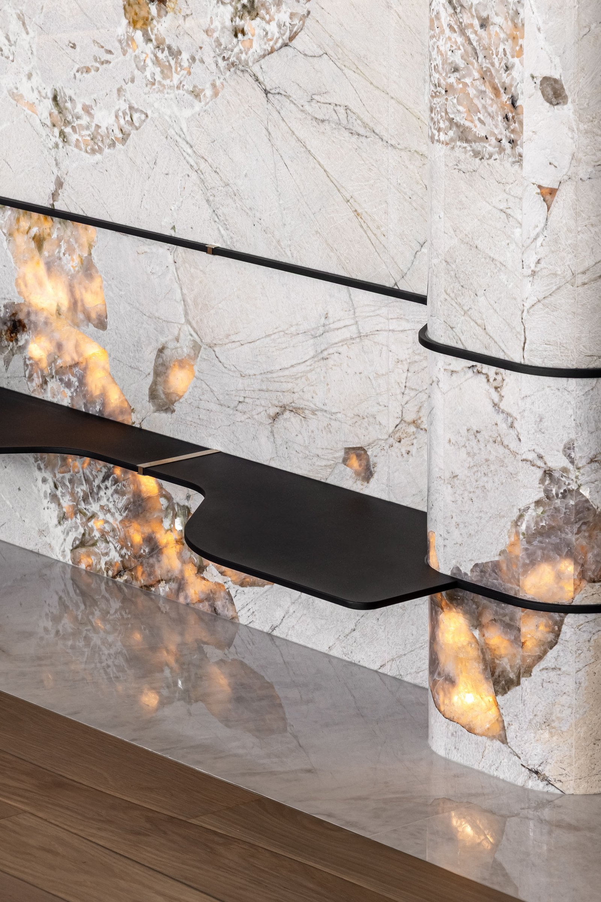
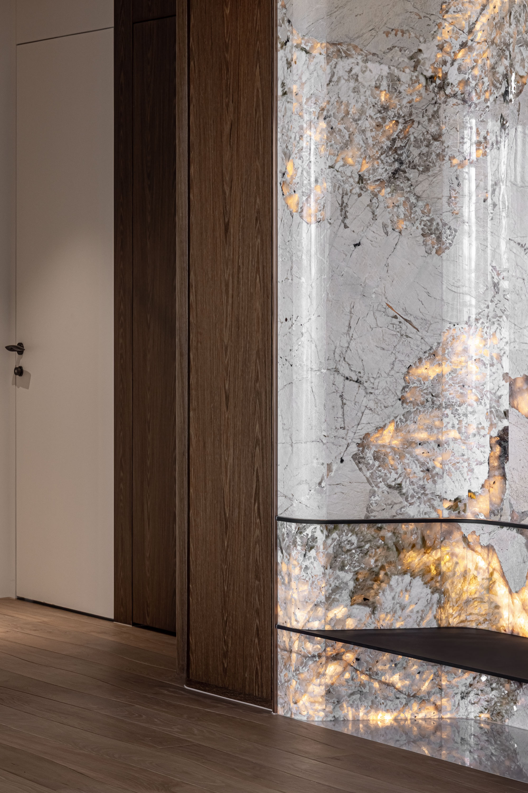
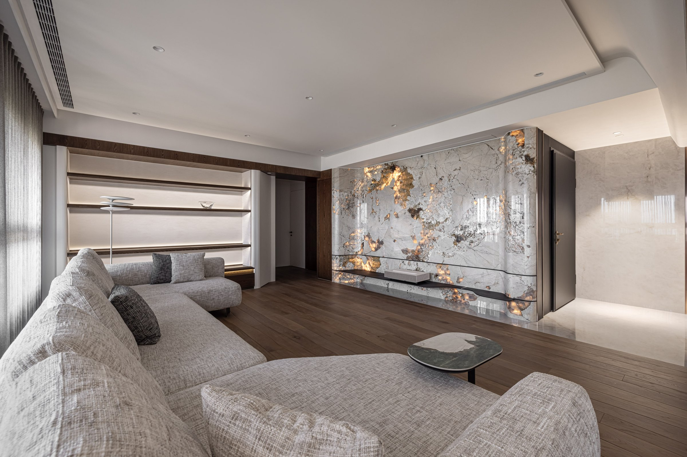
01
這個案子從衛浴開始。排水移位、糞管納入增厚牆體、壁龕與鏡櫃嵌入牆內——設備退到看不見的地方。公共空間取消了餐桌，讓被功能佔據的區域釋放出來。行走更鬆、停留更長、視線更安定。
This project starts in the bathroom. Drainage relocated, pipes absorbed into thickened walls, niches and mirror cabinets embedded flush — equipment retreated below visibility. In the common areas, the dining table was removed, freeing territory. Movement easier, stays longer, the eye at rest.
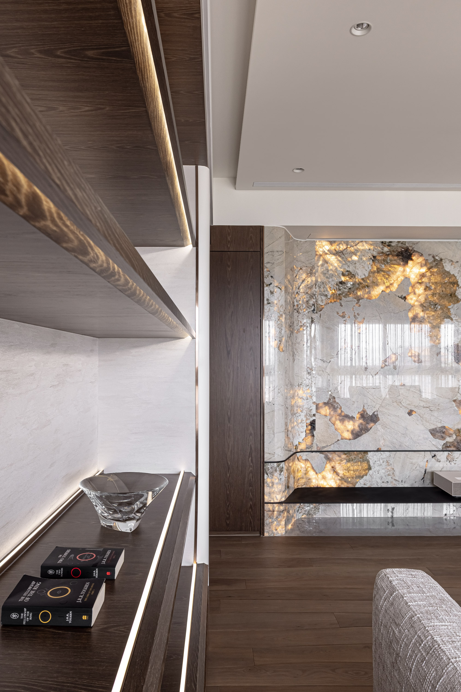

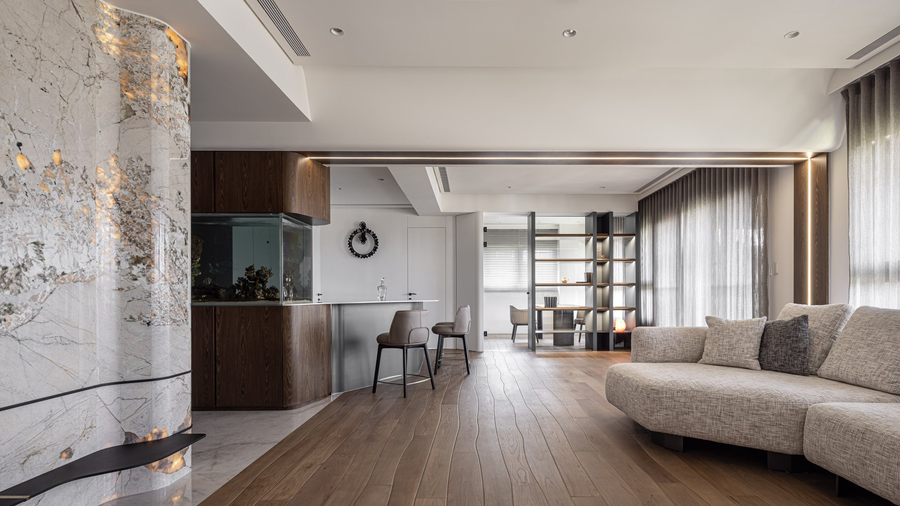
02
魚缸三面可視，讓玄關的第一眼先讀到透明與深度。石材牆的重點不在弧線，而在厚度怎麼被做出來——界面採凹凸層次的立體轉折，進門後的視線在這裡被導向、被緩衝。
The aquarium is visible from three sides, giving the entrance its first reading of transparency and depth. The stone wall's focus is not its curve but how thickness is achieved — layered three-dimensional folds that guide and buffer the eye upon entry.
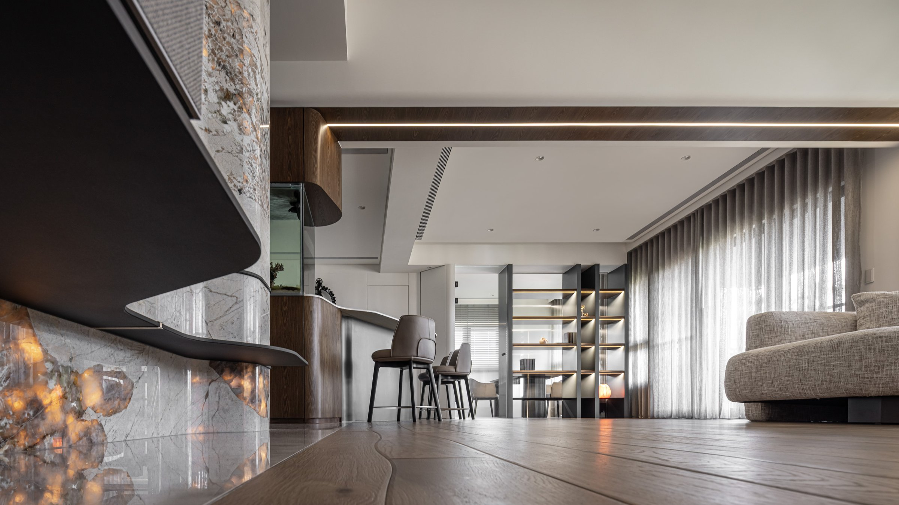
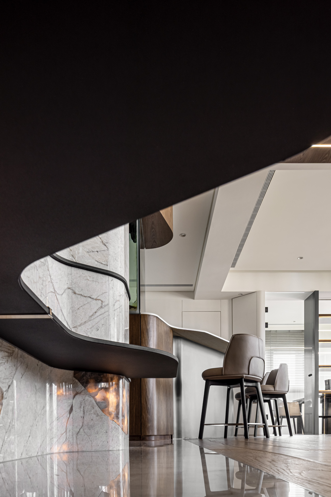
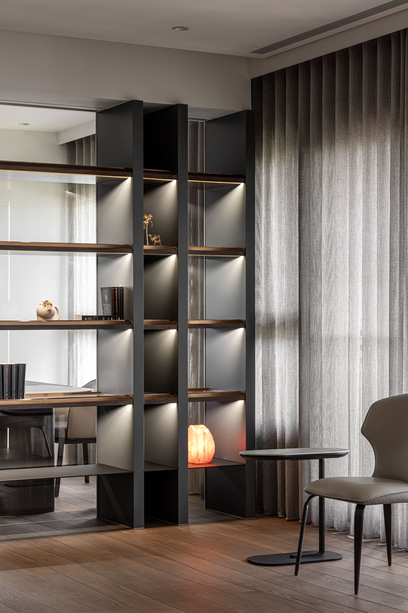
03
石材牆與木作形成材質的呼應，重與輕、亮與暗在同一個節奏裡被安放。厚度不是裝飾，是結構與比例完成後自然成立的重心。
Stone and woodwork form a material echo — heavy and light, bright and dark, placed within the same rhythm. Thickness is not decoration; it is the center of gravity that emerges once structure and proportion are resolved.
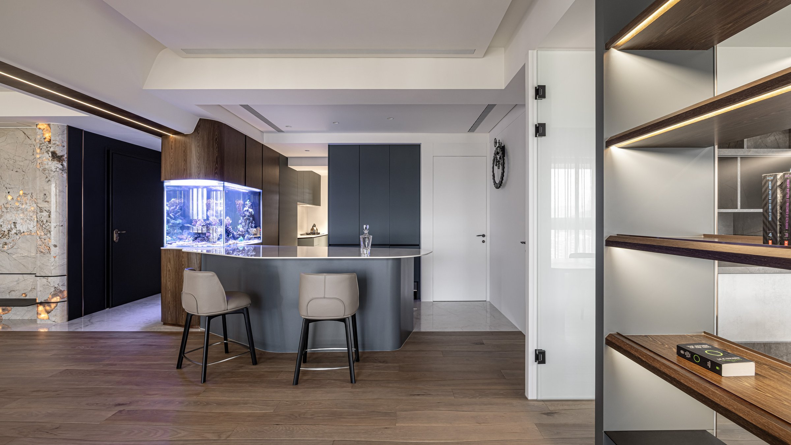
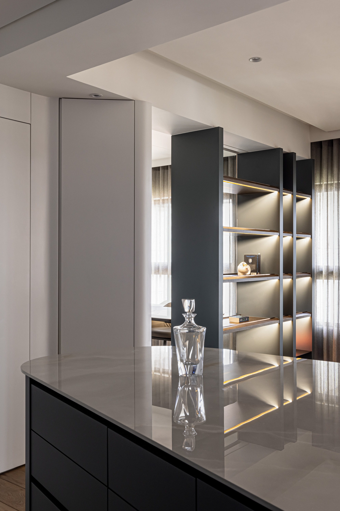
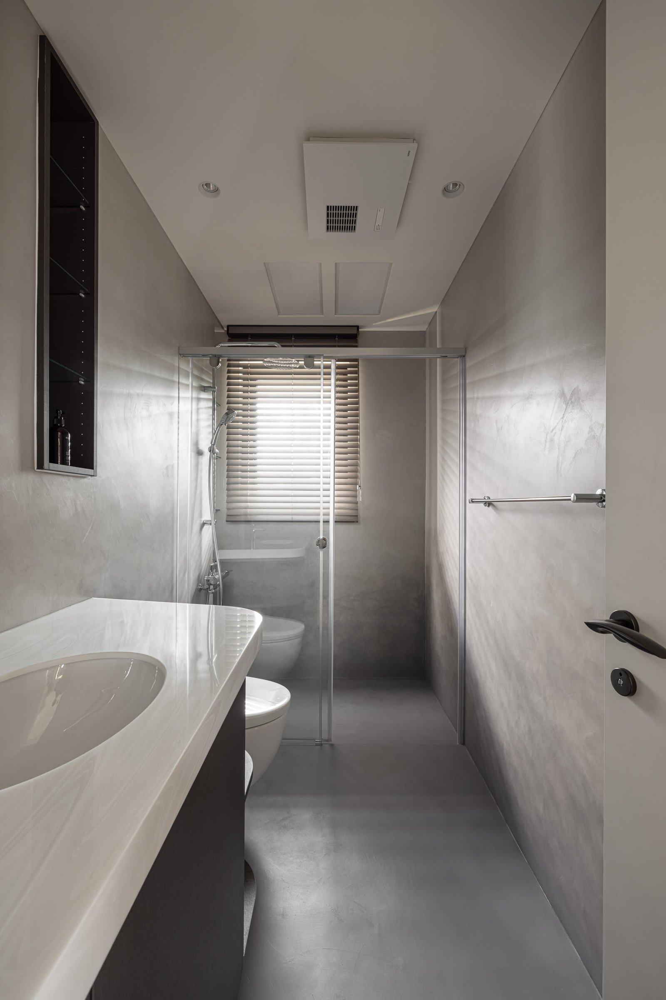
04
吧台以折線回應圍聚的需求。它不是一條直線，而是透過折線的展開與回折，讓四個人的面向更自然地靠近。整潔來自結構性的整合——乾淨不是表面極簡，是把複雜提前整理好。
The bar counter responds to gathering with a folded line — not straight, but opening and returning so four people face each other naturally. Neatness comes from structural integration: cleanliness is not surface minimalism but complexity sorted in advance.
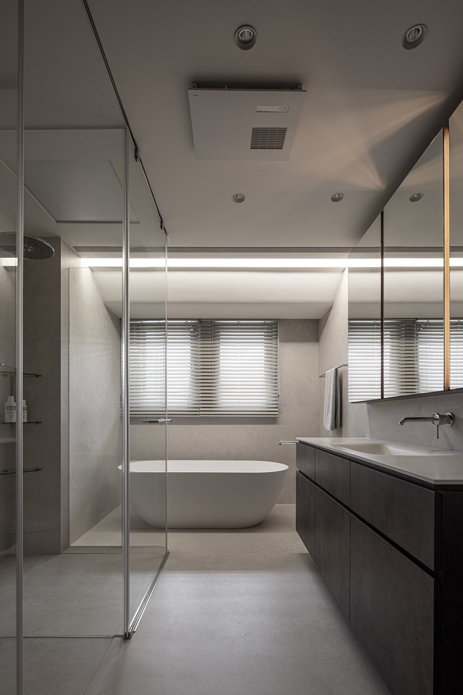
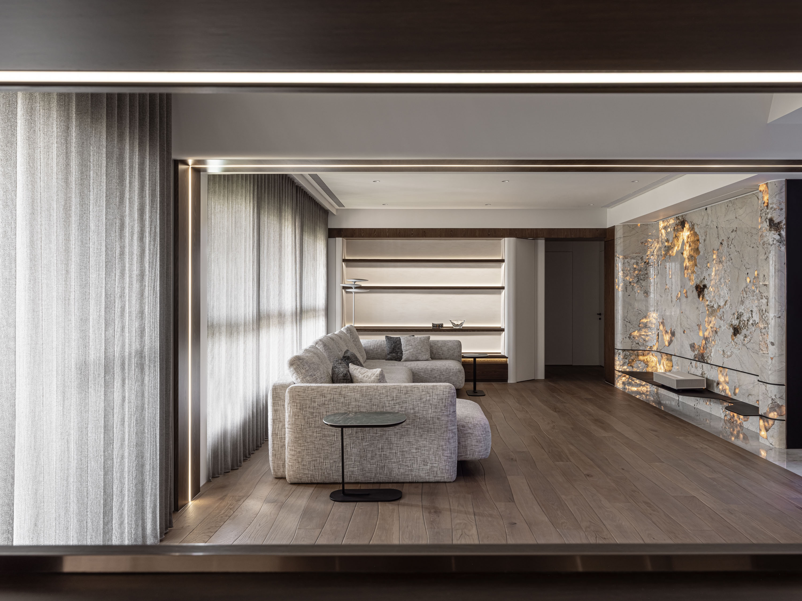
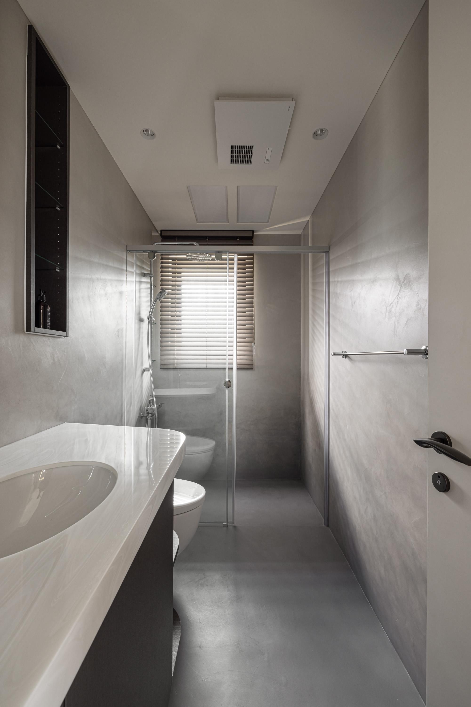
05
這個家最安靜的設計，是所有設備的消失。空調出風口藏進天花板的線條裡，開關面板與牆面齊平，插座退到傢俱後方。當技術設備從視線中消失，空間才能真正安靜下來——整潔不是風格，是系統性的整合。
The quietest design in this home is the disappearance of all equipment. Air vents hide within ceiling lines, switch plates sit flush with walls, outlets retreat behind furniture. When technical equipment vanishes from sight, the space can truly be quiet — neatness is not a style; it is systematic integration.
All Photos